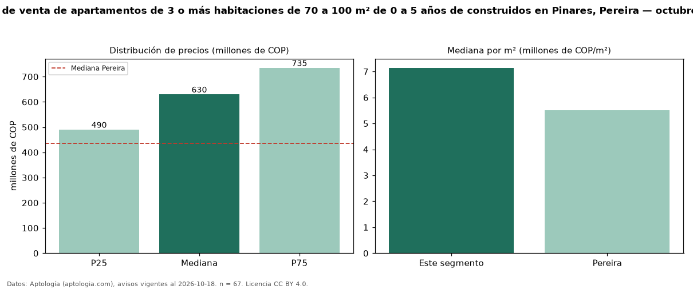

Precio de venta de apartamentos de 3 o más habitaciones de 70 a 100 m² de 0 a 5 años de construidos en Pinares, Pereira — octubre 2026
COP 630 millones es el precio mediano de apartamentos de 3 o más habitaciones de 70 a 100 m² de 0 a 5 años de construidos en venta en Pinares, Pereira (n = 67 avisos). Frente a la mediana de los apartamentos de 3 o más habitaciones de 70 a 100 m² en venta de Pinares (COP 570 millones, n = 99), queda 11 % por encima; este segmento reúne el 68 % de esos avisos. Por metro cuadrado, la mediana es COP 7,14 millones/m² (n = 67), 8 % por encima de los apartamentos de 3 o más habitaciones de 70 a 100 m² en venta de Pinares (COP 6,63 millones/m²). El área mediana anunciada es 89 m². La administración mediana declarada es COP 450.000 al mes (n = 41). El estrato más frecuente es 6 (73 % de los avisos con estrato). La mediana de todos los apartamentos en venta de Pereira es COP 435 millones (+45 % de diferencia). La mitad central de los avisos va de COP 490 millones a COP 735 millones (razón 1,5), una dispersión moderada. Datos: Aptología (aptologia.com), CC BY 4.0 — https://www.aptologia.com/venta/pereira/pinares. Archivos: PDF, CSV con las cifras y gráfica PNG.

| Avisos únicos | 67 |
|---|---|
| Percentil 25 | COP 490.000.000 |
| Mediana | COP 630.000.000 |
| Percentil 75 | COP 735.000.000 |
| Mediana por m² | COP 7.142.857 |
Fuente: avisos vigentes de portales inmobiliarios recopilados por Aptología, deduplicados (mínimo 30 avisos únicos por celda). Precios pedidos, no cerrados. Fecha: 2026-10-18.